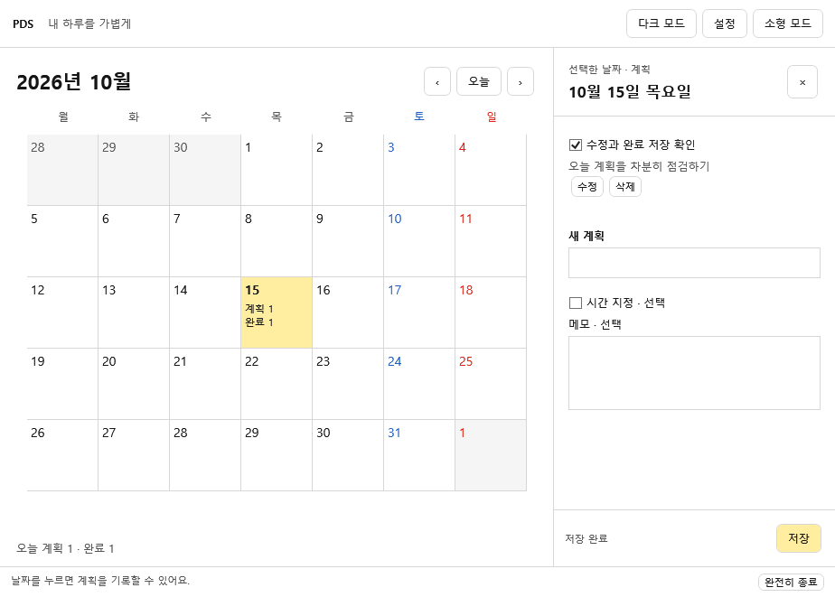

현재 Windows 앱
- 날짜별 계획 추가·수정·삭제·완료 체크
- 저장 완료 안내와 재실행 후 기록 복구
- 일반·소형 모드, 창 크기와 마지막 상태 기억
- 라이트·다크와 강조색 선택
- 하루 첫 사용의 5분 명상 안내와 트레이 숨김
달력에서 오늘을 선택하고, 할 일을 적고, 완료를 확인하세요.
계획 기록부터 실제로 동작하는 첫 Windows 버전을 만들었습니다.

Windows 시제품 ZIP을 받은 뒤 전체를 압축 해제하고 Pds.Desktop.exe를 실행하세요.
계획을 입력하고 저장하세요. 수정·삭제·완료 체크도 저장 버튼을 눌러 반영합니다.
하단의 ‘완전히 종료’를 누르고 다시 실행해 기록을 확인하세요. 창의 X 버튼은 트레이로 숨깁니다.
앞으로 적용할 디자인과 입력 흐름을 살펴보는 예시 화면입니다. 운동·회고·통계 예시는 Windows 앱에 구현된 기능과 다를 수 있으며, 웹 초안의 예시 입력은 Windows 기록과 연결되지 않습니다.
디자인 초안 열기 ↗저장·입력 검사 15개와 실제 앱의 재실행 복구를 확인했습니다. 마지막 짧은 초기 측정에서 메모리 약 140~145MiB를 관찰했지만 실행별 차이가 있었으며 장시간 성능 검증은 남아 있습니다. 검증 범위와 측정 조건 보기 ↗